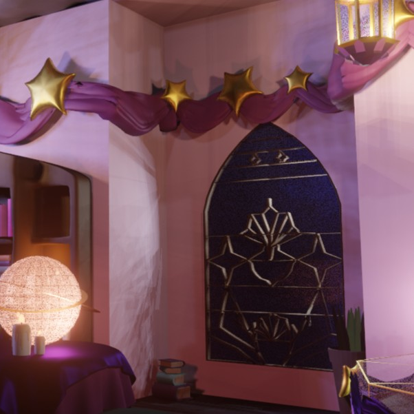
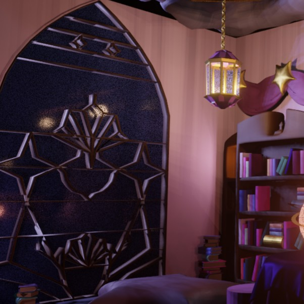
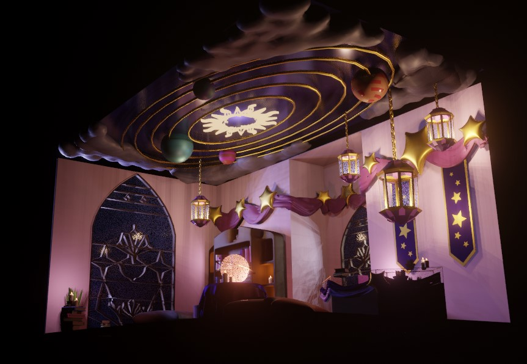

Portfolio
Throughout my journey as a Multimedia Arts student, I've definitely have been tried and tested with all the subjects that this Major has to offer. Here is just a glimpse of the works I've been doing for the past year.
3d Modeling
This room was inspired by a mix of magic and space. One of the two things that I found facinating and interesting to make a room inspired by the two themes. With the ceiling projecting a galaxy and a star in the middle that illumiates the room.
 
